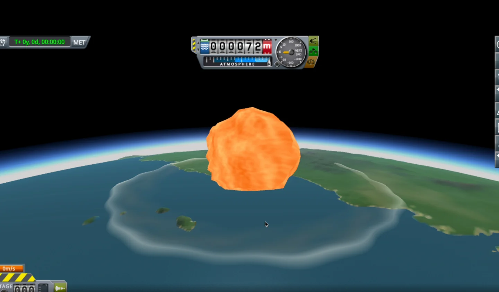

Fireball to mushroom cloud
A 2.8 km-radius fireball cools to gold-orange and rises into a sunlit mushroom cloud about 11 km high and 27.5 km across on stock Kerbin.
The source site for the Project Sundial mod, with a custom payload, an animated fireball and mushroom cloud, and a shock front that sweeps across Kerbin.

GameData/ProjectSundial into your KSP installation’s existing GameData folder. Replace the existing ProjectSundial folder if prompted.Project Kundial v0.4 includes the v0.8.1 plugin. The download’s Install.txt uses that plugin version. If the buttons are missing, check that the DLL is at GameData/ProjectSundial/Plugins/ProjectSundial.dll inside your KSP installation.
A 2.8 km-radius fireball cools to gold-orange and rises into a sunlit mushroom cloud about 11 km high and 27.5 km across on stock Kerbin.
A tall, curved shock front with a trailing second crest and a dust wake travels up to about 36 km over 95 seconds, starting fast. A brief tremor plays when it passes the flight camera.
At detonation, parts on loaded craft with active physics can be destroyed within a 2.2 km radius. The visual effects extend farther across Kerbin.
Attach to the bottom, the nose or the sides. In the VAB, switch on the structural cage to wrap the casing in a yellow steel frame (+3 t, +2,500 funds) that parts can attach to.
Above the atmosphere there is no mushroom cloud. A white flash, two expanding shock rings that fade over about 30 seconds and streaks of cooling debris play out over 42 seconds, and the damage radius grows to 8 km with line-of-sight shielding.
Download and extract the v0.8.1 source for this release. Use the managed assemblies from your own copy of KSP 1.12.x. The source download and GitHub repository include the Windows and POSIX build scripts. No DLC or other mods are required.
After building, copy GameData/ProjectSundial into your KSP installation’s existing GameData folder. In the editor, search for Sundial.
Windows · Developer Command Prompt
build-windows.cmd "C:\Program Files (x86)\Steam\steamapps\common\Kerbal Space Program\KSP_x64_Data\Managed"Use Visual Studio Build Tools with the .NET desktop build tools workload. Full Windows steps
macOS Terminal
sh build.sh "/path/to/KSP.app/Contents/Resources/Data/Managed"On Linux, use the Managed folder under KSP_Data or KSP_x64_Data.
The mod is a fictional adaptation of a historical proposal. The source README credits the historical records, research, and io_object_mu for model authoring.